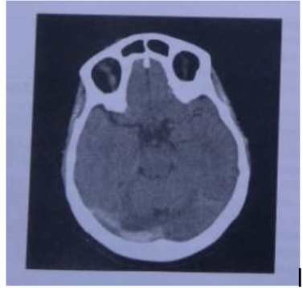

Mulher de 25 anos queixa-se de crises de cefaleia unilateral, latejante, intensa, com duração de 2 dias, associada a fotofobia e náuseas. Cerca de 30 minutos antes das crises, apresenta zumbido e vertigem, que cessam após o início da dor. Tem apresentado 3 crises ao mês, durante as quais não consegue estudar ou trabalhar. Faz uso de anticoncepcional oral combinado para a prevenção de gravidez. Possui vida agitada com horários irregulares para se alimentar e dormir. O exame físico é normal. Assinale a alternativa que apresenta uma conduta INCORRETA nesse caso:
Acidentes Vasculares Cerebrais AVC Considere a frequência de alguns sintomas em três subtipos de acidente vascular cerebral: Hemorragia intraparenquimatosa, isquemia cerebral e hemorragia subaracnoide correspondem, respectivamente, aos subtipos
Uma paciente de 25 anos, portadora de enxaqueca desde a puberdade, observou aumento da frequência das crises, o que relacionava à tensão durante a preparação para o concurso da residência médica. Passou a usar paracetamolcodeína com frequência quase diária nos últimos seis meses. Há 20 dias, a cefaleia se tornou praticamente contínua e não está melhorando com o aumento da dose dos analgésicos. O exame neurológico é totalmente normal e não há outros sintomas sistêmicos. Qual seria a melhor conduta neste momento?
Mulher, 76 anos de idade, procura atendimento na UBS por episódios de dor intensa em hemiface esquerda, principalmente em região maxilar e de mandíbula, graduando até 8/10 na escala de dor. O quadro se repete há 3 anos, associado a sensação de choques e é precipitado pela mastigação ou frio. Tem hipertensão arterial sistêmica, em uso de hidrocloratiazida e enalapril. Ao exame, apresentase em bom estado geral, com sinais vitais estáveis, com alodínia térmica em hemiface esquerda. Demais exames segmentares sem alterações. Diante do quadro, indique a melhor opção terapêutica para controle da dor:
Mulher, 76 anos de idade, procura atendimento na UBS por episódios de dor intensa em hemiface esquerda, principalmente em região maxilar e de mandíbula, graduando até 8/10 na escala de dor. O quadro se repete há 3 anos, associado a sensação de choques e é precipitado pela mastigação ou frio. Tem hipertensão arterial sistêmica, em uso de hidrocloratiazida e enalapril. Ao exame, apresentase em bom estado geral, com sinais vitais estáveis, com alodínia térmica em hemiface esquerda. Demais exames segmentares sem alterações. O exame complementar mais adequado para diagnóstico etiológico nesse caso:
Mulher, 76 anos de idade, procura atendimento na UBS por episódios de dor intensa em hemiface esquerda, principalmente em região maxilar e de mandíbula, graduando até 8/10 na escala de dor. O quadro se repete há 3 anos, associado a sensação de choques e é precipitado pela mastigação ou frio. Tem hipertensão arterial sistêmica, em uso de hidrocloratiazida e enalapril. Ao exame, apresentase em bom estado geral, com sinais vitais estáveis, com alodínia térmica em hemiface esquerda. Demais exames segmentares sem alterações. Considerando o caso clínico descrito, indique o diagnóstico mais provável:
Mulher de 46 anos de idade, previamente hígida, é admitida na unidade de emergência com queixa de cefaleia de grande intensidade, rigidez cervical e perda de consciência, que ocorreu após esforço físico há 1 hora. Ao exame físico, apresenta exão limitada do pescoço. De acordo com esse quadro clínico, qual é o diagnóstico etiológico da cefaleia apresentada pela paciente?
Paciente feminina, 15 anos de idade, procura ajuda devido à queixa de piora na frequência de sua enxaqueca. Desde o último mês, as crises estão ocorrendo a cada três dias, e a paciente está com o humor deprimido. Ela usa medicamentos para asma e é obesa. Não faz uso de anticoncepcionais. Com base nesse caso, atribua V (verdadeiro) ou F (falso) às a rmativas a seguir. ( ) O topiramato está associado à perda de peso e é uma boa opção no tratamento. ( ) A amitriptilina não está associada ao ganho de peso. ( ) O propranolol não piora a asma. ( ) A flunarizina pode causar depressão. ( ) O naratriptano não é usado rotineiramente na prevenção das crises de enxaqueca. Assinale a alternativa que contém, de cima para baixo, a sequência
Estima-se que a cefaleia é a queixa (ou problema de saúde) mais comum, afetando até 88% da população pediátrica e adolescente. A cefaleia pode resultar em prejuízo significativo, incluindo absenteísmo escolar e interferência no desempenho escolar, na interação familiar e na sociabilidade. Em relação a esse tema, assinale a alternativa correta.
Uma jovem de 25 anos, com diagnóstico prévio de epilepsia, vai à consulta devido a quadro de dor de cabeça pulsátil, unilateral, de moderada a forte intensidade, associada a náuseas, sem vômitos, sem fonofobia ou fotofobia. Tem apresentado crises de cefaleia durante 4 dias por semana. Ela está usando fenobarbital e anticoncepcional oral. A melhor opção terapêutica para substituir o fenobarbital é
Mulher de 32 anos sofre de enxaqueca de difícil controle com mais de três episódios por mês e resposta parcial ao uso de doses altas de sumatriptano. Tem história pregressa de asma brônquica e diagnóstico recente de hipertensão arterial. Nesse caso, uma boa opção para a prevenção da enxaqueca é utilizar:
O diagnóstico de cefaleia tensional é pautado na entrevista médica, pois o exame clínico neurológico geralmente não apresenta alterações significativas. Quanto às características clínicas da cefaleia tensional, assinale a alternativa correta.
Sobre a cefaleia, é correto afirmar:
Analise os seguintes quadros clínicos: I. Mulher, 24 anos, início há 48h de cefaleia de forte intensidade, associada a náuseas sem vômitos, com fotofobia mas sem fonofobia, piorou hoje cedo por ter corrido para pegar ônibus, pulsátil predominantemente à esquerda. Episódios semelhantes desde os 19 anos de idade. II. Homem, 32 anos, hiv positivo, com histórico de cefaleia em salvas. Agora apresentando cefaleia holocraniana contínua iniciada há 5 dias com piora progressiva e associada a parestesia de terço inferior da face à direita, discreta confusão mental mas sem rigidez de nuca. III. Mulher, 61 anos, início há 1 dia de cefaleia intensa tipo aperto, predominantemente vespertina. Histórico de quadro semelhante há 2 anos. Neste episódio percebe piora da intensidade e duração da crise de dor, associada a vômitos alimentares. Assinale a alternativa correta:
Paciente de 12 anos queixa-se de cefaleia recorrente, moderada, com intervalos variáveis, de dias, semanas ou meses. A do r é bilateral e pulsátil e, por vezes, acompanhada de irritabilidade, anorexia e náusea. Antes do quadro de dor, vê “bolinhas coloridas” e sente formigamento na língua. Sobre o diagnóstico mais provável, assinale a alternativa correta.
Leia o caso clínico a seguir. Mulher de 75 anos dá entrada no pronto-socorro referindo intensa cefaleia associada a confusão mental, vômitos e sudorese. Ao exame, apresentava ritmo cardíaco regular, FC = 80 BPM e PA = 240x140 mmHg, em ambos os membros superiores. Nesse caso, qual é o diagnóstico mais provável?
Menina, 5 anos de idade, é levada ao PS após uma primeira crise convulsiva generalizada. Na anamnese, mãe refere que a criança apresenta cefaleia matinal e vômitos há 4 meses. O plantonista solicitou tomogra a de crânio que diagnosticou um tumor. Considerando o diagnóstico dessa criança, é correto afirmar:
Cefaleias são queixas frequentes no departamento de emergência e, em sua avaliação, é essencial detectar os sintomas associados a causas secundárias ou a sinais de alarme. Considerando essa informação, julgue os próximos itens. I. Os sintomas sistêmicos são considerados como sinais de alarme da cefaleia. II. As náuseas são consideradas como sinais de alarme da cefaleia. III. A gravidez e o puerpério são considerados como sinais de alarme da cefaleia. IV. A imunossupressão é considerada como sinal de alarme da cefaleia. V. Uma duração maior que 24 horas é considerada como sinal de alarme da cefaleia. Assinale a alternativa correta.
Homem de 28 anos de idade apresenta há 2 anos cefaleia uma vez por semana de forte intensidade, unilateral, pulsátil, com foto e fonofobia e acompanhada por náuseas. Nega fenômenos visuais ou somestésicos. Há 6 meses associou outro tipo de cefaleia quase diariamente, bilateral, de fraca a moderada intensidade, em aperto, sem outros sintomas. Faz uso diário de dipirona e cetoprofeno e nos momentos de exacerbação da dor usa sumatriptano. Quais são os diagnósticos desse paciente?
Mulher, 34 anos, apresenta quadro de cefaleia temporal direita, pulsátil, com fotofobia e vômitos. Refere que, nos últimos 3 anos, ela tem apresentado cerca de 2 crises por semana. Sobre esse caso, assinale a afirmativa correta.
Mulher, 57 anos, procura atendimento médico com episódios recorrentes de cefaléia unilateral, tipo sgada, como se estivesse tomando um choque na cabeça. Os episódios apresentam resolução espontânea, costumam durar pouco tempo, chegam a ocorrer várias vezes ao dia e a paciente notou que se iniciam preferencialmente após escovar o cabelo. Não apresenta outras comorbidades e os exames físico e neurológico são normais. O tratamento ideal deve ser feito com
Homem, 89 anos, refere cefaleia temporal bilateral há 3 meses, que não o desperta durante a noite. Não é responsiva a analgésicos comuns e é acompanhada por sensibilidade do couro cabeludo ao pentear os cabelos, além de fadiga dos músculos da mastigação. Houve emagrecimento de 4kg neste período. Exames laboratoriais: Hb = 11g/dL e VHS =115mm/h na 1ª hora. Pode-se afirmar que:
São fármacos indicados para tratamento profilático da enxaqueca: I. Topiramato. II. Amitriptilina. III. Divalproato de sódio. Quais estão corretos?
Mulher de 30 anos procura atendimento no posto de saúde devido a episódios de cefaleia holocraniana em aperto, desde os 20 anos. Durante os episódios, a paciente deixa de fazer atividades cotidianas, assim como prefere car em seu quarto com janela fechada e sem barulho. Ao tentar fazer atividade física durante os episódios, relata piora dos sintomas com dor pulsátil em região temporal. Nega vômitos durante os episódios. Se não tomar analgésicos, a paciente refere que ca até dois dias com dor. Faz uso de paracetamol 1 grama durante os episódios e, em algumas ocasiões, faz uso deste medicamento mais de duas vezes ao dia . Nos últimos meses, apresenta em média 8 crises ao mês. É portadora de Asma e tem exame físico e neurológico normais. Qual das medicações a seguir deve ser utilizada na paciente acima para diminuir a ocorrência de crises de cefaleia?
Revisar: possível letra faltando em enunciado
Em relação à migrânea, é correto afirmar:
São considerados sinais de alerta para cefaleias secundárias os listados corretamente no item.
As cefaleias primárias são doenças com episódios recorrentes de dor de cabeça, sendo correto que
Nos casos de cefaleia do tipo tensional episódica , o Médico da unidade de urgência orienta paciente e familiares quanto à baixa gravidade do quadro e de não haver necessidade de encaminhá-lo a um especialista ou realização de exames complementares. Sendo adequado o item.
Sobre a cefaleia migrânea em crianças, assinale a alternativa correta:
Comparece ao serviço de pronto atendimento uma mulher de 42 anos, apresentando quadro súbito de cefaleia intensa e desesperadora associada a náuseas, vômitos e perda transitória da consciência durante a relação sexual. No momento do atendimento, apresenta-se confusa, com rigidez de nuca e sem de cits motores. Qual seria o diagnóstico mais provável para o caso e conduta indicada?
A enxaqueca (migrânea) é uma das cefaleias primária mais frequente e limitante devido à sua intensidade, seu tratamento preventivo era feito com medicações como anti-hipertensivos, anticonvulsivantes, antidepressivos; mas com o advento dos anticorpos monoclonais, houve uma mudança de paradigma em relação ao tratamento pro lático da enxaqueca. Assinale a alternativa correta que contém um anticorpo monoclonal já aprovado, no Brasil, para tratamento preventivo da enxaqueca e seu mecanismo de ação:
O anticonvulsivante é uma classe de fármacos utilizada para a prevenção e tratamento das crises convulsivas e epilépticas, bem como no tratamento dos transtornos de humor. Como um fármaco da classe dos anticonvulsivantes, encontra-se aquele que exerce atividade gabaérgica e proporciona alívio da dor em cerca de 25% dos doentes com neuralgia do trigêmeo resistente à Carbamazepina, o qual é chamado:
A cefaleia em salvas é uma cefaleia unilateral, referida sempre do mesmo lado, forte intensidade (excruciante), localizando- se em região orbital, supraorbital e/ou temporal. Sendo correto o item:
Na Cefaleia do tipo tensional episódica, ocorre cefaleia em pressão, holocraniana de leve a moderada intensidade, podendo bene ciar-se com atividade física. Aparece geralmente no m do dia, durando de 30 minutos a sete dias. Está correto que
Quanto à arterite de células gigantes, é
São características clínicas classicamente associadas à cefaléia com pior prognóstico, EXCETO:
Mulher, 30 anos de idade, é atendida no PS, referindo dor de cabeça intensa, às vezes excruciante, com localização periorbital, associada a sintomas autonômicosipsilaterais e agitação. Tal quadro alterna períodos de dor intensa, com repetição frequente dos sintomas durante o dia e remissão completa por meses. Qual é o diagnóstico mais provável e a conduta inicial, respectivamente?
Das abaixo, a melhor terapêutica abortiva para cefaleia em salvas é:
Paciente de 25 anos, sexo feminino, em uso de contraceptivo oral comparece em pronto atendimento referindo cefaleia holocraniana, de forte intensidade, em aperto, associada a náuseas e vômitos, confusão mental com alteração do nível de consciência. Nega crises convulsivas prévias e quaisquer outras doenças. Assinale a alternativa correta quanto ao diagnóstico provável.
Você está na UBS e recebe J.N.M., feminino, 19 anos, com queixa de cefaleia, hemicraniana direita, pulsátil, associada a náuseas, vômitos, foto e fonofobia. As crises estão ocorrendo entre três e quatro vezes por semana, duram em média 4 horas, onde durante este período a mesma não consegue realizar nenhuma atividade de vida diária, tendo que por uma ou duas vezes no mês procurar emergência para uso de medicações injetáveis. Exame neurológico normal, altura: 1.50m, peso: 70kg, AVC: RCR 2T BNF s/S FC: 74 bpm, PA: 118/78mmHg. Antecedentes pessoais: uso de anticoncepcionais hormonal oral e asma. Diante do caso qual a melhor opção terapêutica para a profilaxia de crises:
O tratamento de escolha da cefaleia com características de cefaleia unilateral, forte intensidade, associada a lacrimejamento e hiperemia conjuntival, congestão nasal e rinorreia, sudorese frontal, miose, rubor facial, ptose e edema palpebral e duração limitada é:
Mulher de 23 anos de idade vem ao Pronto-Socorro com cefaleia contínua há quatro dias. A dor inicialmente era temporal esquerda de moderada intensidade, mas hoje passou a ser holocraniana, de forte intensidade, e associada a náuseas e fotofobia. Nestes quatro dias, medicou-se apenas com dipirona. Refere que tem cefaleia com características semelhantes, mas de fraca intensidade, pelo menos duas a três vezes por mês. Não usa nenhuma medicação contínua. Sem antecedentes patológicos relevantes. O exame clínico (incluindo o exame neurológico) é normal. Na chegada ao Pronto-Socorro recebeu dipirona, cetoprofeno e metoclopramida endovenosa, sem melhora após duas horas. Qual alternativa representa a melhor opção terapêutica?
Mulher de 36 anos, obesa, com história prévia de asma brônquica com controle irregular, procura atendimento por quadro de episódios de cefaleia, 1 a 2 vezes por semana, de forte intensidade, hemicrania direita, latejante, com náuseas e fotofobia associadas, com 12 a 24 horas de duração, aliviados com o uso de paracetamol e ibuprofeno associados. Refere que as crises têm sido mais frequentes nos últimos meses e que, em algumas situações, a medicação não consegue aliviar completamente o quadro, questionando o que poderia fazer para controlar essas crises. Nesse contexto, a medicação indicada como tratamento e ação preventiva é:
Mulher, 28 anos, estudante universitária, com queixa de cefaleia recorrente, vem consultar referindo estar em uso de dipirona até 4 vezes ao dia, além de profenid®, nos últimos 2 dias, pois a dor de cabeça não cessa. A rma que não é a pior dor da sua vida, mas é a dor que mais durou, intensidade 7/10, que vai a 8/10 caso faça algum esforço físico. Refere que a dor é bilateral, pulsátil, acompanhada de fotofobia e náuseas. Nega febre, sintomas neurológicos focais, perda de peso ou histórico de câncer. DUM há 10 dias. Nega etilismo, tabagismo ou atividade física regular. Ao exame: Glasgow 15, sem alterações no exame neurológico dos pares cranianos. Diante deste caso, podemos afirmar que se trata de um caso de:
Baseado no conhecimento adquirido sobre cefaleias na infância responda:
A hipertensão intracraniana idiopática é uma síndrome clínica que mimetiza tumores cerebrais, caracterizada por aumento da pressão intracraniana com contagem celular e conteúdo de proteínas do líquor normais. Sobre esta situação, analise as alternativas abaixo. I – Uma das causas prováveis é a hipervitaminose D. II – Tem relação com a obesidade. III – A punção lombar inicial após tomografia é diagnóstica e pode ser terapêutica. Estão corretas as assertivas
Paciente 30 anos, feminino, procura atendimento em UPA devido a quadro de cefaleia. A paciente apresenta crises de cefaleia desde os 15 anos, algumas vezes incapacitantes, preferindo locais mais calmos e com pouca luminosidade, deixando de fazer atividades de rotina quando está com dor de cabeça. Alguma das crises são associadas com náuseas e vômitos. Ela procura o atendimento com crise semelhante, com vômitos, iniciada há aproximadamente 20 horas, porém sem apresentar melhora com o uso de analgésicos que usa de rotina. Nega outras queixas ou condições médicas relevantes. Exame físico e neurológico sem alterações. Pressão Arterial 110x70mmHg, Pulso 90 batimentos por minuto. Qual a melhor conduta farmacológica para essa paciente, no momento?
Paciente feminina, de 14, anos consultou por cefaleia recorrente e náuseas matinais, com piora progressiva do equilíbrio, quadro iniciado há 2 semanas. A conduta imediata mais recomendada é realizar
Homem, 32 anos de idade, procura atendimento na UPA por quadro de cefaleia intensa em pontada, unilateral, em região periorbitária a esquerda, há 30 minutos, associada à fotofobia e náuseas. Nega comorbidades. Ao exame, paciente bastante ansioso, com fácies de dor. Nota-se lacrimejamento e hiperemia conjuntival em olho esquerdo. Cite o fármaco mais adequado para profilaxia de novos quadros semelhantes.
Paciente de 50 anos, sem diagnóstico de doenças prévias, consultou por vir apresentando, há 3 anos, episódios de cefaleia muito intensa nos primeiros minutos, que ocorrem quase sempre na madrugada (fazendo-o despertar), duram em torno de 1 hora e têm remissão espontânea, mas retornam cerca de 4 vezes no mesmo dia. Essa condição se repete por algumas semanas e, depois, o sintoma desaparece por cerca de 6 meses. A cefaleia é unilateral, sempre à esquerda, com episódios de congestão das mucosas nasal e conjuntival esquerdas em algumas ocasiões. Por duas vezes, procurou uma Unidade de Pronto-Atendimento, tendo recebido oxigênio por máscara, com alívio da crise. Mostrava-se preocupado porque, apesar de haver remissões espontâneas, a dor era intensa e ele desconhecia seu significado. No momento da consulta, encontrava-se assintomático, e o exame físico era normal. Com base nos dados, qual o diagnóstico mais provável?
Homem de 52 anos de idade, tabagista, apresenta há alguns anos crises de forte dor de cabeça que se concentram principalmente no olho esquerdo. A cefaleia aparece de 2 em 2 anos quase sempre nesta época do ano e permanece por cerca de 45 a 60 dias, a dor dura geralmente 1 hora e na maioria das vezes aparece durante a madrugada despertando-o: ca absolutamente ""desesperado"" quando sente a dor e tem vontade de ""bater a cabeça na parede"". Durante a dor apresenta vermelhidão no olho esquerdo e lacrimejamento intenso desse lado. As crises atuais começaram há 15 dias realizou uma tomografia durante um período de crises, que era normal. Considerando a principal hipótese diagnóstica, o que é correto afirmar?
São típicos da cefaleia em salva (Cluster):
Um pré-escolar, 4 anos de idade, sexo masculino é levado ao pronto-socorro com história de cefaleia recorrente, vômitos e alteração do comportamento, caracterizada por irritabilidade há cerca de 20 dias. No exame físico, o paciente é pouco cooperativo, FC: 60 bpm, PA: 140×90 mmHg. A hipótese diagnóstica mais provável é:
Uma mulher de 30 anos apresenta cefaléia crônica diária, zumbido pulsátil e turvamento episódico da visão. No exame, ela apresenta papiledema. Que avaliação você realizaria?
São critérios diagnósticos para migrânea na infância, segundo a International Headache Society, todos os abaixo, exceto:
Segundo a moderna classificação das cefaleias, das alternativas abaixo qual não é uma característica da migrânea?
A cefaleia que tem prevalência igual entre homens e mulheres é a
Mulher de 22 anos procura assistência médica em função de cefaleia crônica e recorrente de forte intensidade. Informa cefaleia unilateral e pulsátil que inicia de forma mais leve e acentua-se com o passar das horas, durando mais de 4h na ausência de tratamento adequado. Às vezes, o quadro é precedido por escotomas, caracterizados como falhas periféricas no campo visual. A avaliação sugere migrânea, pois, além dos dados apresentados, há:
Paciente refere dor de cabeça persistente, diária, início recente, de localização occipitofrontal, com característica às vezes latejante, melhora ao deitar e piora quando se senta ou fica na posição ortostática. Qual é a primeira hipótese diagnóstica?
Mulher de 20 anos sofre com crises de cefaleia hemicraniana, geralmente acompanhadas de náuseas, foto e fonofobia, desde os 16 anos. As crises são de forte intensidade e recorrentes, atualmente, ocorrendo 2 a 3 vezes por semana, di cultando suas atividades estudantis. Faz uso de analgésicos comuns e anti-inflamatórios com resposta progressivamente pior em relação ao efeito que observava anteriormente. A medicação que pode ser considerada como opção para esta paciente é o(a):
Criança, nove anos de idade, consulta na UBS devido a queixa de cefaleia. Apresentou cinco crises anteriores de cefaleia, que se iniciaram há um ano. A dor é frontotemporal, às vezes unilateral, às vezes bilateral, de intensidade moderada. Nega horário preferencial e observa que é mais comum em situações de estresse. Relata piora da dor com atividade física e com barulho. Quando sente dor, ela usa dipirona, deita-se no quarto mais escuro e dorme até melhorar, o que ocorre em aproximadamente duas a três horas. Há dois dias, a mãe foi chamada na escola pois a criança apresentou vômito associado à cefaleia. Ela relatou que estava fazendo prova e meia hora antes de sentir a dor, começou a enxergar pontos escuros que a dificultavam enxergar. No momento, está sem dor e o exame físico está normal. Assinale a alternativa que contém a hipótese diagnóstica MAIS PROVÁVEL e a conduta MAIS ADEQUADA.
Ao atender um paciente com queixa de cefaleia, o médico generalista deve estar atento à sinais de alarme que podem sinalizar uma maior gravidade do caso. Assinale a alternativa abaixo que NÃO é um sinal de alarme no paciente com cefaleia:
Alguns sinais e sintomas são considerados alerta para cefaleias secundárias e indicam a necessidade de investigação por exames (red flags) como, por exemplo, episódios recorrentes de:
Mulher de 38 anos atendida no pronto-atendimento com cefaleia occipital súbita e primeiro episódio de convulsão. História prévia de obesidade, em uso de anticoncepcional oral. Exame neurológico: pressão arterial 130x100mmHg; escala de coma de Glasgow 14; desorientada; rigidez nucal ++/++++; força muscular normal. Solicitada tomogra a computadorizada do crânio com injeção de contraste. O diagnóstico mais provável é:

Mulher, 67 anos de idade, em consulta de rotina na Unidade Básica de Saúde, refere cefaleia há 02 meses, progressiva, atualmente de moderada intensidade, holocraniana, sem foto ou fonofobia. Refere crises esporádicas de cefaleia no passado e tratamento para hipertensão arterial. Encontra-se em acompanhamento em serviço terciário por nódulo pulmonar. Apresenta exame neurológico normal. Com base nessa história, qual é a conduta?
Criança de 3 anos foi levada a consulta com história de cefaleia iniciada há 20 dias, holocraniana, de forte intensidade, incapacitante ( 'para de brincar e não quer se mexer'). Mãe relata que criança apresenta cefaleia diária, mais matutina e já despertou durante o sono com queixa de dor, Refere melhora da cefaleia após vômitos, mas resposta parcial ao uso de dipirona, Tia paterna tem diagnóstico de enxaqueca. Pais estão em processo de divórcio. Diante desta história clínica, a conduta CORRETA deve ser:
Mulher, 70 anos, acometida por cefaleia súbita e intensa, seguida de rebaixamento do nível de consciência. Qual o exame de imagem mais indicado para iniciar o processo diagnóstico?
Mulher, 44 anos, procura atendimento em pronto-socorro com queixa de cefaleia holocraniana, em aperto, de intensidade progressiva, há 3 dias. No momento, considera a dor de forte intensidade 8/10. Despertou na última noite pela dor. Hoje pela manhã, ao fazer atividade física, teve novamente piora da dor, que a motivou a procurar o pronto socorro. Nega comorbidades. Exame neurológico normal. Nesse caso, o diagnóstico e a melhor conduta são, respectivamente:
Uma mulher de 37 anos de idade sem histórico de problemas médicos até então, veio a emergência com queixas de dor de cabeça e turvação visual. Ela esteve doente uma semana antes, com náuseas e vômitos. Ela relata cefaleia há vários dias, porém a dor piorou na última noite. Exame neurológico estava normal, exceto por leve edema papila. Ela era magra e tabagista. Sua única medicação em uso era anticoncepcional oral. Qual diagnostico mais provável?
Assinale a assertiva correta em relação à cefaleia/enxaqueca na infância
Em relação à enxaqueca, observe as alternativas abaixo e as correlacione. 1. Enxaqueca com aura; 2. Enxaqueca; 3. Cefaleia crônica; 4. Cefaleia crônica progressiva; 5. Enxaqueca sem aura; A. Mais comum em meninos antes dos 7 anos; B. Ocorrência de pelo menos 2 episódios; C. Associada à hipertensão intracraniana; D. Associada ao uso diário de analgésicos; E. Ocorrência de pelo menos 5 episódios.
Paciente de 70 anos procura ambulatório de neurologia por suspeita de neuralgia do trigêmeo. Nega tratamento anteriores e que apresenta muita di culdade para falar e comer quando acontece a dor, em região facial direita do rosto. O tratamento de escolha (padrão ouro) para pacientes com neuralgia do trigêmeo é:
Mulher, 30 anos, procura o ambulatório de clínica médica para tratamento de episódios de cefalia desde os 15 anos de idade. Segundo ela, associa-se ao período pré - menstrual. Informa muitas vezes, ser precedida por escotomas cintilantes e acompanhada por náuseas e vômitos. Informa ter decidido procurar o médico, pois nos últimos 03 anos, a cefaleia tem interferido na sua vida profissional. Qual o possível diagnóstico e o medicamento mais adequado?
Homem, 32 anos, caucasoide, referindo episódios de artrite envolvendo joelhos e tornozelos há 2 anos. Há um ano passou a apresentar episódios recorrentes de turvação visual com comprometimento da acuidade. Antecedentes pessoais: trombose venosa profunda em membro inferior direito e lesões ulceradas orais há 6 meses. Exame físico: úlceras e lesões acneiformes cutâneas em tronco. Exame oftamológico: uveíte posterior bilateral. A hipótese diagnóstica mais provável:
Homem de 40 anos vem a consulta com queixa de episódios de cefaleia occipital tipo peso, desencadeados principalmente por situações de estresse ou excesso de trabalho. Durante a consulta, seu exame físico estava normal e sua pressão arterial foi de 140 x 90 mmHg. O paciente não apresenta comorbidades nem mesmo antecedentes familiares relevantes. Além das orientações sobre seu tipo de cefaleia, a conduta adequada do médico é:
Mulher de 55 anos apresenta diagnóstico de enxaqueca, caracterizada por cefaleia pulsátil em região temporal acompanhada de fotofobia e náuseas. Atualmente faz uso apenas de sintomático (paracetamol) nas crises, as quais têm sido esporádicas (cerca de 1 vez a cada 2 meses) e de leve intensidade (geralmente 3 em uma escala de 0-10). Anteriormente, chegou a fazer tratamento pro lático com propranolol, apresentando bons resultados. Hoje procurou pronto-socorro devido a cefaleia holocraniana de forte intensidade (10 em uma escala de 0-10), tipo pontada, além de vômitos, o que não melhorou com paracetamol. Nesse caso, a conduta adequada é:
Em relação às cefaleia secundárias assinale a opção CORRETA.
Qual das estruturas abaixo não é responsável por gerar dor na cabeça?
Assinale a opção errada em relação à classificação das cefaleias em primárias e secundárias.
Uma paciente procurou o médico com queixas de cefaleia, que caracteriza como uma dor intensa em torno do olho esquerdo, que dura cerca de 30 minutos e se repete de três a quatro vezes por dia. Durante os episódios álgicos refere hiperemia em conjuntiva esquerda e lacrimejamento, além de obstrução nasal e coriza à esquerda. Qual o diagnóstico mais provável?
Paciente do sexo masculino, 32 anos, relatou apresentar episódios recorrentes de cefaleia de forte intensidade na região periorbitária direita, associada a fotofobia, hiperemia ocular, ptose palpebral, lacrimejamento e congestão nasal ipsilaterais à dor, com as crises durando cerca de 30 a 60 minutos. A hipótese diagnóstica CORRETA para este paciente é:
Mulher, 35 anos de idade, procura pronto atendimento com dor em hemicrânio direito, pulsátil, de forte intensidade, acompanhada de náuseas/vômitos, foto e fonofobia há 6 horas. Refere episódios prévios de cefaleia semelhantes ao atual. Nega uso de medicações contraceptivas. O exame neurológico é normal. Trata-se de:
Paciente masculino, 38 anos, procura unidade de pronto atendimento por piora importante de cefaleia. Doze dias antes, sofreu uma picada de mosquito em face, em região malar à esquerda, com eritema local. Apresentou edema periorbital ipsilateral no dia seguinte. Alguns dias depois, iniciou cefaleia frontal e retroorbital, porém de intensidade progressiva, além de ter percebido diplopia há um dia. Apresenta FC: 108 bpm, PA: 120x70 mmHg, FR: 22 irpm, TAX: 38,4°C. Ao exame físico: toxemiado, eritema, edema de face à esquerda e edema periorbital bilateral. Palpação da região malar e frontal muito dolorida. Apresenta oftalmoplegia bilateral e fundoscopia com papiledema. Qual é a hipótese diagnóstica?
Adolescente de 11 anos, sexo feminino, queixa de episódios cefaleia holocraniana frequente, geralmente no nal da tarde, a intensidade é moderada, não interfere suas atividades diárias, nem aumenta com atividade física. Descreve o sintoma como uma pressão/aperto bilateral. Nega náuseas, vômitos, fotofobia ou fonofobia. Relata alivio com ibuprofeno. O quadro descrito acima sugere:
Paciente do sexo feminino, de 28 anos, mudou-se para área de abrangência da USF do Mocinha Magalhães e procura o acolhimento da unidade com queixa de cefaleia há 8 horas, de moderada intensidade, hemicraniana à direta, acompanhada de fotofobia, fonofobia, náuseas e vômitos. Tem crises semelhantes, 1 a 2 vezes por semana (exceto no período perimenstrual, quando tem crises diárias), desde os 15 anos de idade. Não fuma, não bebe e não usa drogas. Mora com os pais e com um irmão de 20 anos. Refere que sua mãe tem o mesmo quadro e ambas procuram atendimento médico apenas nos momentos da crise, geralmente no pronto-socorro da cidade onde moravam. O exame clínico é normal. Qual diagnóstico é compatível com o quadro clínico da paciente?
Mulher de 23 anos, com episódios recorrentes de cefaleia desde os 17 anos de idade. Atualmente tem tido crises fortes mais de 6 dias por mês, ao ponto de atrapalhar suas atividades diárias. A dor é bilateral, pulsátil, com fotofobia, fonofobia e geralmente dura mais de 4 horas, chegando a durar às vezes mais de 24 horas. Assinale a alternativa mais adequada.
Paciente de 58 anos de idade foi admitido no pronto-socorro por cefaleia supraorbitária direita, de fortíssima intensidade, intermitente (2 a 4 eventos ao dia), com duração aproximada de 1 hora, há 4 dias. Nos últimos 5 anos, o paciente apresentou cerca de 8 crises com características semelhantes às da atual, com duração aproximada de 1 mês. Ao exame foram constatadas as seguintes alterações: edema palpebral, hiperemia conjuntival, miose e lacrimejamento restritos ao olho direito. Qual das condutas emergenciais abaixo é a mais apropriada para o caso?
A cefaleia é a terceira forma de dor mais comum entre crianças e adolescentes. Sobre essa doença, assinale a alternativa INCORRETA:
Mulher de 32 anos é atendida no pronto atendimento com queixa de dor de cabeça recorrente há 6 meses. Refere que a dor é de moderada intensidade, localizada na região frontal, intemitente com duração de aproximadamente 4 horas, de caráter pulsátil e acompanhada de náuseas, fotofobia e fonofobia. Relata ainda que os episódios são desencadeados por atividade física e jejum prolongado ou privação do sono. O exame físico é normal. Diante desse quadro, qual é o diagnóstico e o tratamento inicial recomendados?
Adolescente de 12 anos apresenta queixa de cefaleia em região frontal e occipital, tipo pressão, de moderada intensidade, ocorrendo principalmente no nal do dia, duas a três vezes por semana. Mãe refere que as dores pioram em períodos de provas escolares e melhoram com a utilização de analgésicos. O diagnóstico mais provável para o caso é:
J.M.S., sexo feminino, 38 anos, chega ao consultório médico com queixa de “dor de cabeça”. Relata que já tem essa dor de cabeça há muitos anos. A conduta mais adequada neste caso é
Sobre a cefaleia por uso excessivo de medicamentos, é correto afirmar que Respostas: 1 12 23 34 45 56 67 78 89